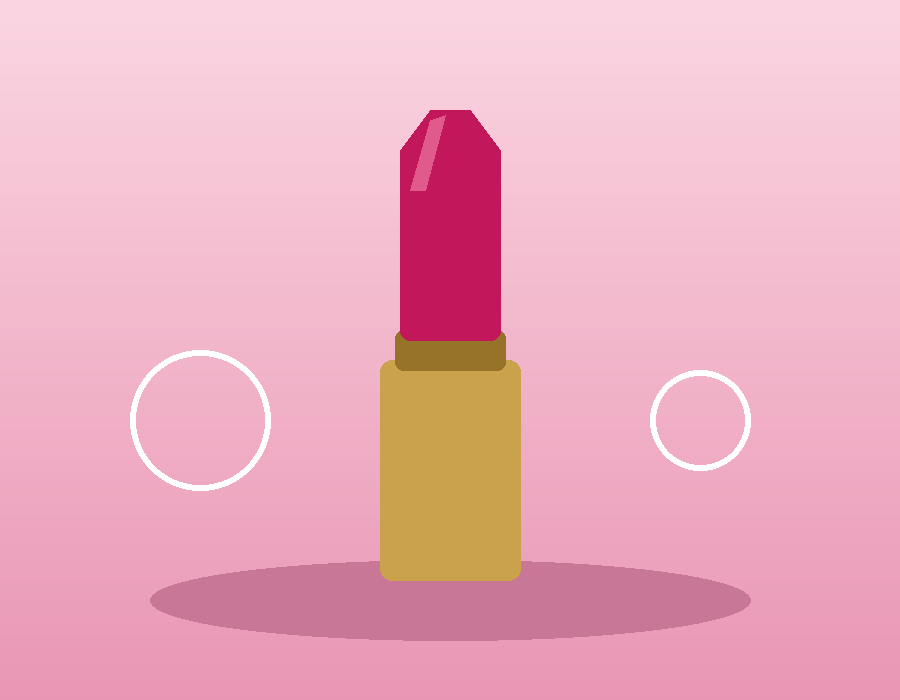
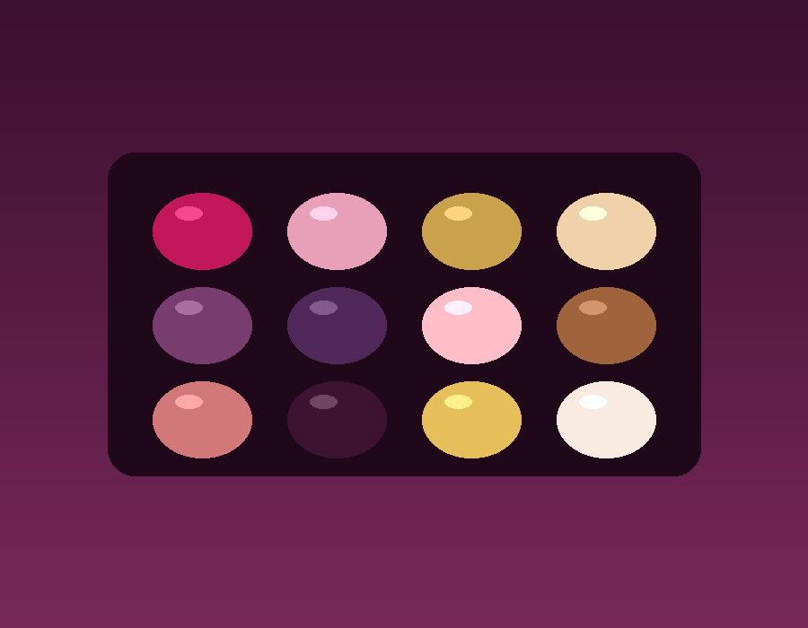
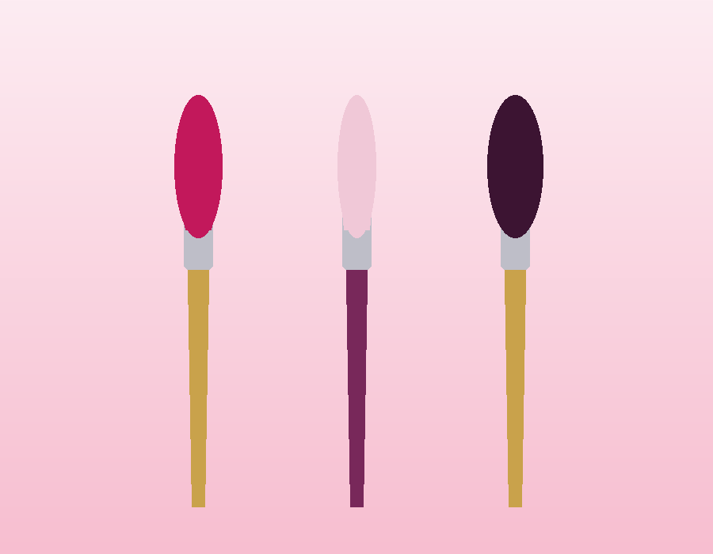

Base
Unifica el tono de la piel. Elige un color que coincida con tu cuello, no solo con tu rostro.
Una guía sencilla para conocer los productos básicos, aprender una rutina paso a paso y maquillarte con confianza, sin importar tu nivel.
Empezar la rutina
Para empezar no necesitas una colección enorme. Estos cinco productos cubren casi cualquier look.
Unifica el tono de la piel. Elige un color que coincida con tu cuello, no solo con tu rostro.
Disimula ojeras e imperfecciones. Se aplica en pequeños toques y se difumina con los dedos o una esponja.
Dan color y profundidad a los ojos. Las paletas con tonos neutros son ideales para el día a día.
Aporta un toque de color natural en las mejillas y hace que el rostro se vea fresco.
Termina el maquillaje. Desde acabados mate hasta brillos, hay uno para cada ocasión.
Sigue este orden para que el maquillaje se vea parejo y dure más tiempo.
Algunas de las herramientas y productos que más se usan al maquillarse.


Empieza con poco producto y agrega más solo si lo necesitas.
Lávalas cada semana para evitar bacterias y que el color se aplique mejor.
Maquíllate cerca de una ventana para ver los colores tal como son.
Antes de dormir, retira todo el maquillaje para cuidar tu piel.